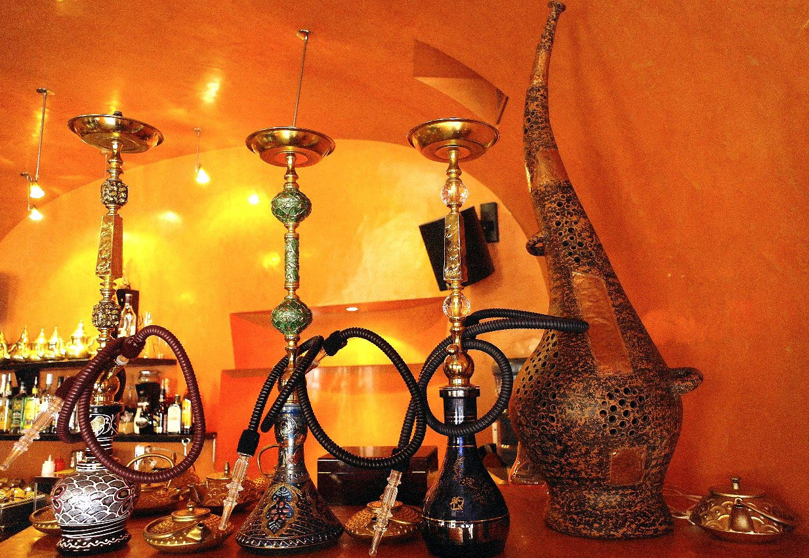

История возникновения кальяна

Кальян — это не просто устройство для курения, а целая культура с многовековой историей, которая зародилась на Востоке и покорила весь мир. Точное место появления первого кальяна до сих пор вызывает споры среди историков, но большинство дорог ведут в древнюю Индию и Персию.
Откуда пошло название?
Само слово «кальян», скорее всего, имеет арабские корни. Однако в разных странах этот девайс называют совершенно по-разному:
- Hookah (Хука) — так его называют в индийских и англоязычных странах. Слово произошло от «хукка», что на хинди означает «горшок» или «ваза».
- Shisha (Шиша) — популярное название в Египте и странах Северной Африки. Происходит от персидского слова «шише», переводящегося как «стекло».
- Nargile (Наргиле) — распространено в Турции, Греции и Сирии. Корни уходят в санскрит к слову «нарикела», что означает «кокосовый орех» (из которого изначально и делали первые колбы).
Этапы эволюции
За сотни лет конструкция кальяна прошла огромный путь от примитивных приспособлений до современных дизайнерских моделей:
- Древнейший период: Вместо стеклянных колб использовались скорлупки кокосов, выдолбленные тыквы или деревянные сосуды. Шлангами служили полые трубки тростника.
- Персидский этап: В Персии начали использовать фарфоровые колбы и мягкие шланги из змеиной кожи. Курение кальяна стало важной частью дипломатического этикета.
- Османский расцвет (Турция): Именно здесь в XVIII–XIX веках кальян приобрел свой классический вид: металлическая шахта, стеклянная колба и глиняная чаша. Султаны устраивали целые ритуалы курения.
Кальянная культура сегодня
В современном мире кальян трансформировался в идеальный способ расслабиться после тяжелого дня, побыть наедине со своими мыслями или провести вечер в компании близких друзей за приятным разговором. Именно эту теплую, дымную и умиротворяющую атмосферу Востока мы и воссоздали для вас в кальянной у Сашика.
Вернуться на главную